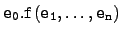
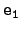
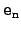
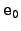

There are three forms of dispatch (i.e. method call) in Cool. The three forms differ only in how the called method is selected. The most commonly used form of dispatch is
<expr>.<id>(<expr>,...,<expr>)Consider the dispatch . To evaluate this expression, the arguments are evaluated in left-to-right order, from  to . Next,  is evaluated and its class C noted (if is void a runtime error is generated). Finally, the method f in class C is invoked, with the value of bound to self in the body of f and the actual arguments bound to the formals as usual. The value of the expression is the value returned by the method invocation.
Type checking a dispatch involves several steps. Assume has static type A. (Recall that this type is not necessarily the same as the type C above. A is the type inferred by the type checker; C is the class of the object computed at runtime, which is potentially any subclass of A.) Class A must have a method f, the dispatch and the definition of f must have the same number of arguments, and the static type of the th actual parameter must conform to the declared type of the th formal parameter.
If f has return type B and B is a class name, then the static type of the dispatch is B. Otherwise, if f has return type SELF_TYPE, then the static type of the dispatch is A. To see why this is sound, note that the self parameter of the method f conforms to type A. Therefore, because f returns SELF_TYPE, we can infer that the result must also conform to A. Inferring accurate static types for dispatch expressions is what justifies including SELF_TYPE in the Cool type system.
The other forms of dispatch are:
<id>(<expr>,...,<expr>) <expr>@<type>.id(<expr>,...,<expr>)The first form is shorthand for self.<id>(<expr>,...,<expr>).
The second form provides a way of accessing methods of parent classes that have been hidden by redefinitions in child classes. Instead of using the class of the leftmost expression to determine the method, the method of the class explicitly specified is used. For example, e@B.f() invokes the method f in class B on the object that is the value of e. For this form of dispatch, the static type to the left of ``@''must conform to the type specified to the right of ``@''.